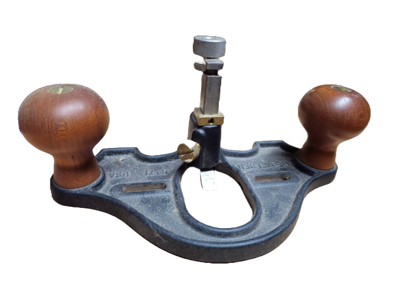

Router Plane
This is a Router Plane, it is considered a type of joinery plane. They specialize in cleaning up after other tools specifically in flat recesses below the surface of a workpiece. There are multiple different blade sizes to match up with what you're trying to accomplish. I use it mostly for cleaning up and perfecting dados, rabbets, and grooves. You can also use them with a tenon Joint with a little finesse or using a secondary workpiece to support the other side of the tool. Beyond that they are great for mortises used for hinges. This ensures you have a perfectly flat and level bottom on your hinge joints.
Router Plane
